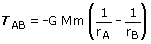
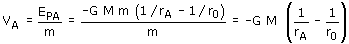
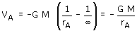

Trabajo del campo gravitatorio
Sea una masa m que se mueve, sometida a la atracción de otra masa M, desde un punto A hasta otro B. El trabajo que realiza la fuerza gravitatoria viene dado por:

M |
Masa creadora del campo |
m |
Masa que se mueve |
rA |
Distancia del punto de partida a la masa M |
|
rB |
Distancia del punto de llegada a la masa M |
Un trabajo positivo significa que la masa m realizará sola el des-plazamiento ganando velocidad. Un trabajo negativo significa que la masa m no realizará sola el desplazamiento, habrá que llevarla o lanzarla con velocidad suficiente
Si el campo lo crean varias masas M1, M2, M3 el trabajo será la suma algebraica de los trabajos realizados por los campos de cada masa en el desplazamiento considerado
Energía potencial
Se define energía potencial de una masa m colocada en un pun-to A, como el trabajo que hace el campo gravitatorio cuando la masa m se desplaza desde dicho punto A hasta un punto O ele-gido arbitrariamente (Origen de potencial).

Cuando se trabaja con masas puntuales o lejos de un planeta se toma como origen de potencial el punto del infinito

Importante
El trabajo del campo es igual a la variación
de energía potencial cambiada de signo

Potencial
Se define potencial en un punto A de un campo gravitatorio co-mo el trabajo
que hace el campo por cada unidad de masa (kg) que se desplaza desde A
hasta un punto O, elegido como origen de potencial.
El potencial en un punto A se obtiene dividiendo la energía
po-tencial de una masa m, colocada en dicho punto, entre la propia masa

Tomando el origen de potencial en el infinito el potencial valdrá:

Nota
Si el campo lo crean varias masas M1,
M2, M3 el potencial en un punto será la suma
algebraica de los potenciales creados en ese punto por cada una de las
masas
Diferencia de potencial
Se define diferencia de potencial entre dos puntos A, B como la diferencia entre sus potenciales, por ese orden
(VA - VB) = VA - VB
La diferencia de potencial mide el trabajo que realiza el campo por cada unidad de masa que se desplaza desde A hasta B

Importante
El campo apunta en el sentido de los potenciales decrecientes.
La d.d.p entre dos puntos tomados en el sentido del campo será
siempre positiva